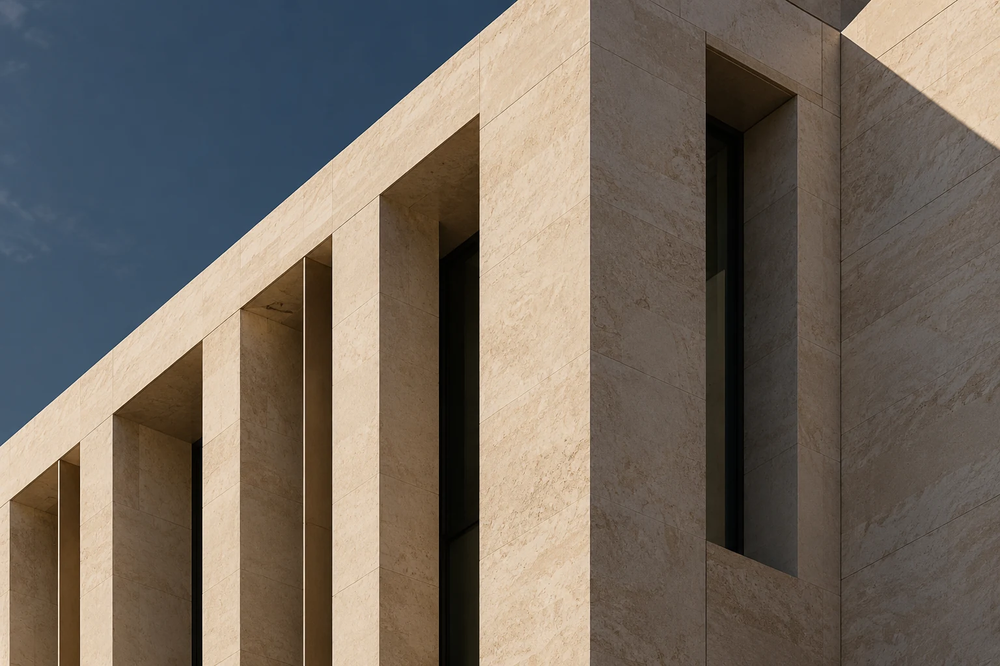

Οικογενειακό δίκαιο
Νομική υποστήριξη σε οικογενειακές υποθέσεις και ζητήματα διαζυγίου.
Δείτε περισσότεραΝομική υποστήριξη σε οικογενειακές υποθέσεις και ζητήματα διαζυγίου.
Δείτε περισσότεραΣυμβουλές για ζητήματα ακίνητης περιουσίας, ιδιοκτησίας και μισθώσεων.
Δείτε περισσότεραΝομική υποστήριξη σε θέματα υπερχρεωμένων νοικοκυριών και διαταγών πληρωμής.
Δείτε περισσότεραΗ επικοινωνία με το γραφείο βασίζεται στη σαφή ενημέρωση για τις νομικές επιλογές σας.
Η εμπιστοσύνη, ο σεβασμός και η επαγγελματική δεοντολογία έχουν κεντρική θέση στη συνεργασία.
Γνωρίστε το γραφείο
Για πληροφορίες σχετικά με την υπόθεσή σας, επικοινωνήστε τηλεφωνικά ή μέσω email.